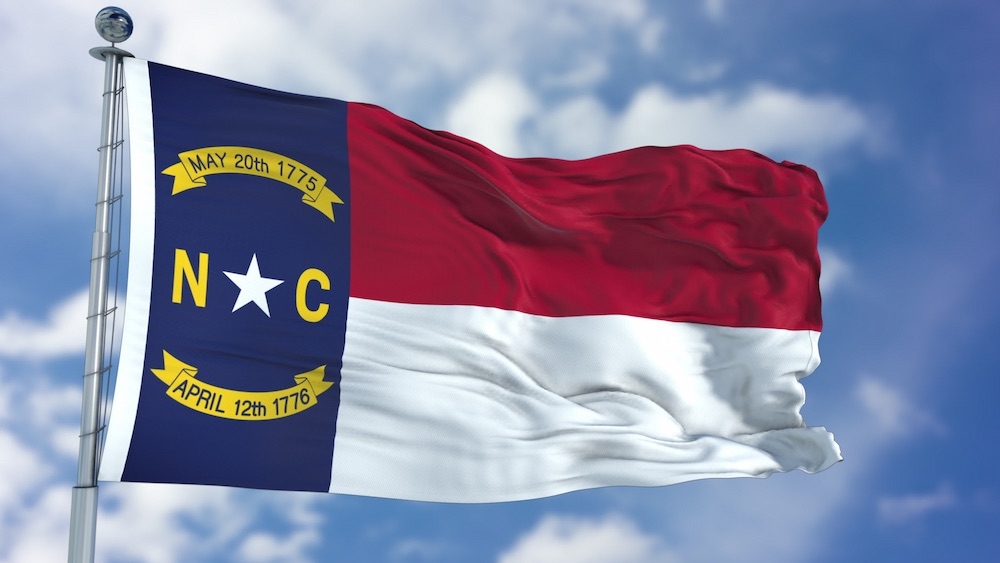

Gilmarie Hernandez
About Me
My name is Gilmarie pronounced Jeel-mAh-rree but everyone calls me Gil (Jil). My family is from Puerto Rico but I currently live in North Carolina with my 3 year old daughter, Emerita. I love to dance
and sing. Although I'm not very good at the singing part, you WILL catch me belting it out in my car
whenever I'm driving somewhere. And have now past that on to my daughter, so you can catch us both
singing at the top of our lungs. Currently, it's the songs in K-Pop Demon Hunters... on
repeat!
We love movies, especially going to the theatre together. She gets her little kids combo
and I get my kettle corn. She definitely takes after me, especially her sass!
North Carolina, USA
North Carolina is the 12th state of the United States. It is known for having the first successful man powered flight, which took place near the city of Kitty Hawk in 1903. North Carolina is also known for it's beautfil landscapes. The mountains have more than 300 waterfalls and the beaches are one of the most popular ones to visit during summer.